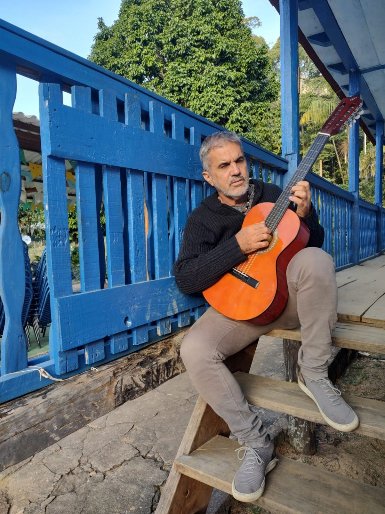
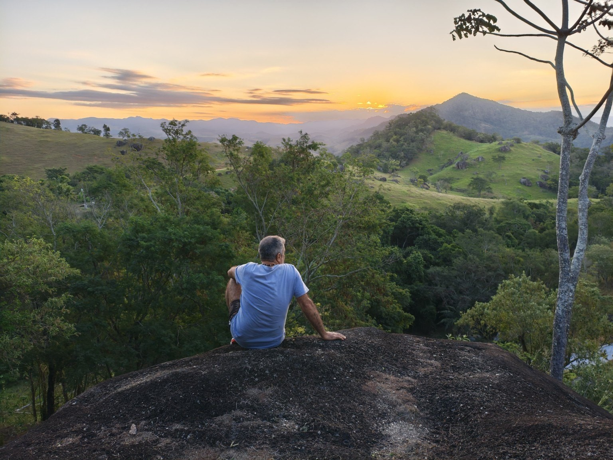
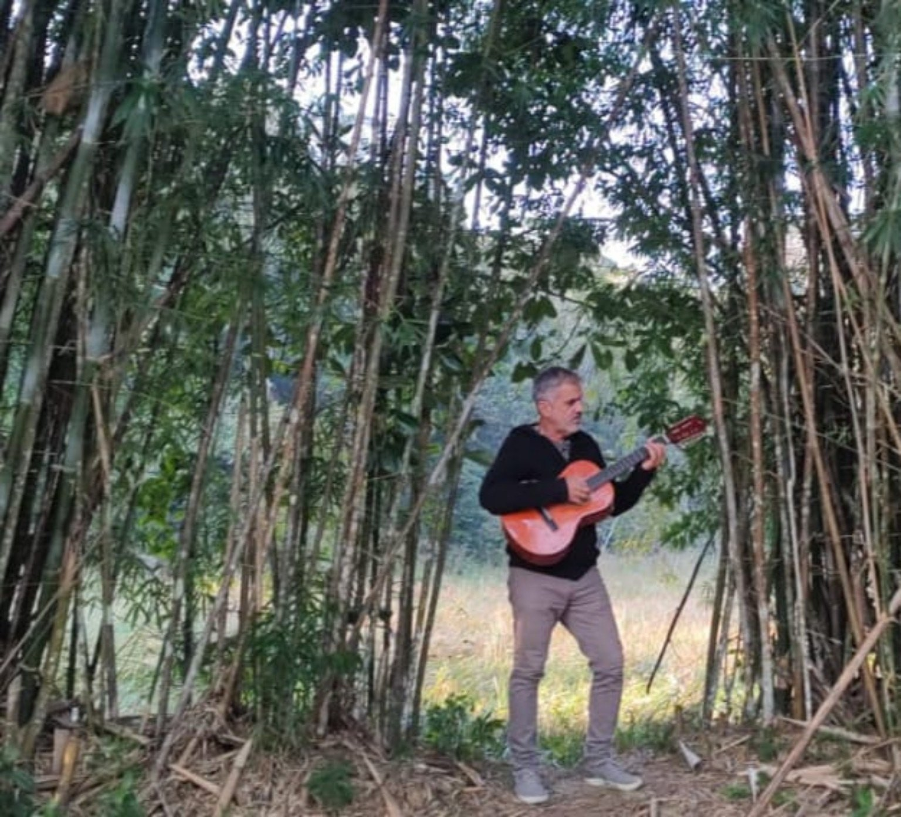
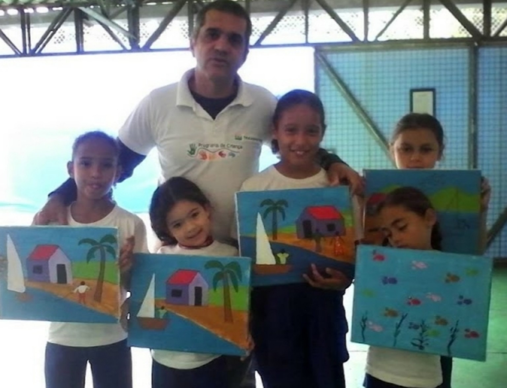

Sérgio
Amaral
Arte que canta o que vive, pinta o que sente e transforma comunidade em expressão.
Ouvir músicasVer obras

Arte em movimento
“Canta o que vive, pinta o que sente e escreve o que o mundo precisa ouvir.”
Música autoral, poesia urbana, pintura e atuação comunitária se encontram no trabalho de Sérgio Amaral.
Música

O Sentido Bom da Vida
Obras
Casarios, paisagens, cultura popular e cenas coletivas em uma pintura marcada por cores vivas.
As fichas técnicas — título, técnica, dimensões e ano — podem ser acrescentadas assim que forem confirmadas pelo artista.

Projetos sociais
Cores do Hélio Ferraz
Na Serra, Espírito Santo, Sérgio une música, poesia e pintura em ações voltadas à participação de crianças e jovens. O trabalho inclui mural comunitário, oficinas de arte e música e shows autorais.
Arte como espaço de expressão, convivência e voz para a comunidade.
Sérgio Amaral
Sérgio Amaral é cantor, poeta, compositor e artista visual capixaba, com uma trajetória marcada pela arte que transforma.
Nascido em uma família de músicos profissionais, cresceu respirando música de alta qualidade desde a infância. O quintal de casa era palco, a sala era estúdio e a vida era trilha sonora. Foi nesse ambiente de afinação, disciplina e sensibilidade que Sérgio aprendeu cedo que música não é só entretenimento — é ferramenta de reflexão e cura.
Com repertório autoral no Pop Rock com poesia, suas canções fogem do óbvio. São letras que provocam, acolhem e fazem pensar — falam de amor, de rua, de fé, de comunidade, de sonhos e das dores reais do povo.
Além dos palcos, Sérgio leva sua arte para os muros e para as comunidades. Unindo música, poesia e pintura, desenvolve projetos sociais que dão voz a crianças e jovens da periferia.
Estilo: Pop Rock Autoral / MPB / Poesia Urbana
Influências: Legião Urbana, Cazuza, Charlie Brown Jr, Gonzaguinha e o som da rua.